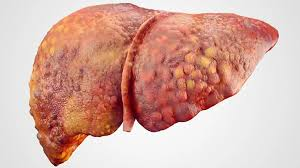

Cirrosis
Descripción

La cirrosis es una enfermedad hepática crónica y progresiva donde el tejido sano del hígado es reemplazado por cicatrices y nódulos, lo que impide su correcto funcionamiento. Esto interrumpe el flujo sanguíneo, y puede llevar a insuficiencia hepática, hipertensión portal (aumento de la presión en la vena que entra al hígado), y a una acumulación de líquido en el abdomen (ascitis) y en las piernas (edema).
Síntomas
- Fatiga intensa
- Pérdida de apetito
- Náuseas
- Hinchazón en abdomen (ascitis)
- Hinchazón en piernas o tobillos (edema)
- Color amarillento en piel y ojos (ictericia)
Tratamiento
Para la cirrosis por alcohol, la abstinencia; para la viral, los antivirales son efectivos. En algunos casos específicos, se requiere trasplante.